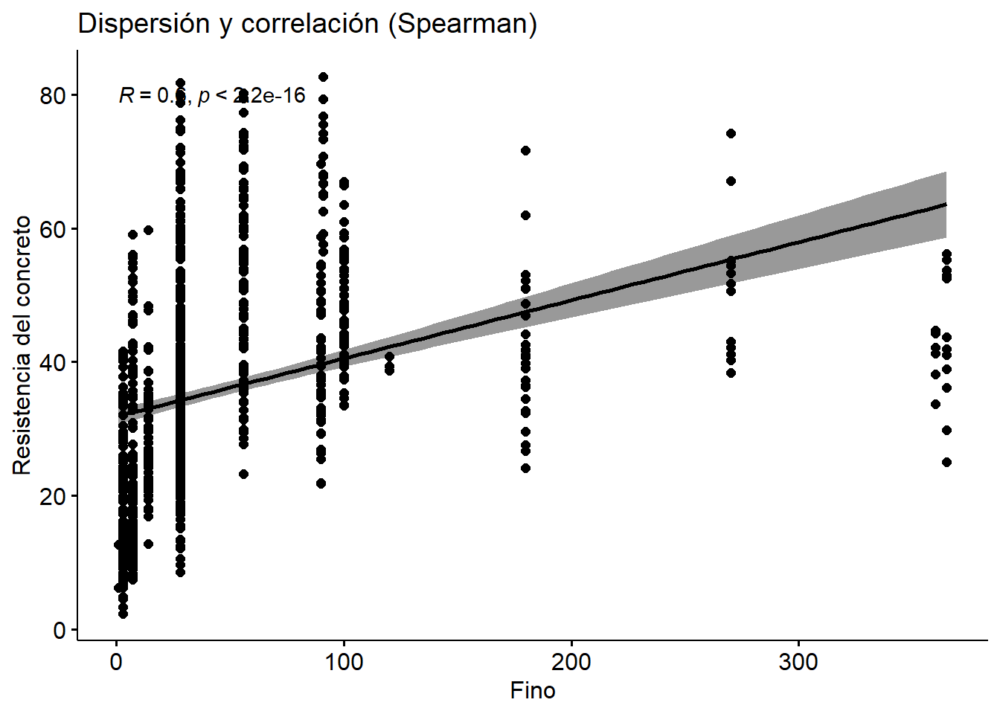

Chapter 2 Resistencia vs Dias
df %>%
ggplot(aes(x=Resistencia_c, y =Dias )) +
geom_point(color = "blue",size = 3) +
geom_smooth(formula = 'y~x', method = "lm",se = TRUE,color="red") +
labs(
title = "Relación entre RESISTENCIA y Dias",
x = "Resistencia_c",
y = "Dias"
) +
theme_bw()
## Warning in ks.test.default(df$Dias, "pnorm", mean = mean(df$Dias), sd =
## sd(df$Dias)): ties should not be present for the one-sample Kolmogorov-Smirnov
## test##
## Asymptotic one-sample Kolmogorov-Smirnov test
##
## data: df$Dias
## D = 0.33729, p-value < 2.2e-16
## alternative hypothesis: two-sided## [1] TRUE## [1] TRUE## [1] 0## [1] 0# 3️⃣ Visualiza la relación
ggscatter(df, x = "Dias", y = "Resistencia_c",
add = "reg.line", conf.int = TRUE,
cor.coef = TRUE, cor.method = "spearman",
xlab = "Fino", ylab = "Resistencia del concreto",
title = "Dispersión y correlación (Spearman)")
# 4️⃣ Verifica la forma de la relación (monótona)
# Si la relación es creciente o decreciente, aunque no lineal, se puede usar Spearman
plot(df$Dias, df$Resistencia_c, pch = 19, col = "blue",
main = "Verificación de relación monótona")
# 5️⃣ Ejecuta la prueba de correlación de Spearman
resultado <- cor.test(df$Dias, df$Resistencia_c, method = "spearman", exact=FALSE)
resultado##
## Spearman's rank correlation rho
##
## data: df$Dias and df$Resistencia_c
## S = 73573324, p-value < 2.2e-16
## alternative hypothesis: true rho is not equal to 0
## sample estimates:
## rho
## 0.5960195Planteamos las hipótesis:
[ H_0: _S = 0 ]
[ H_1: _S ]
Veamos:
n <- nrow(df)
gl = n-2
p = resultado$estimate[[1]]
t_critico = p*sqrt(gl/1-p^2)
t_critico = abs(t_critico)
alpha = 0.05
t_tab = qt(1-alpha/2,df=gl)
abs(t_critico)## [1] 19.10654## [1] 1.962274El análisis de Spearman entre el contenido de Dias y la resistencia del concreto mostró un coeficiente
\[
\rho_S = [0.5960195],
\]
indicando una **correlación debil*;
El estadístico de prueba permitió rechazar H₀, demostrando que la relación observada es estadísticamente significativa, puesto que nuestro t critico 19.106538 es mayor que el t en tabla 1.9622743.